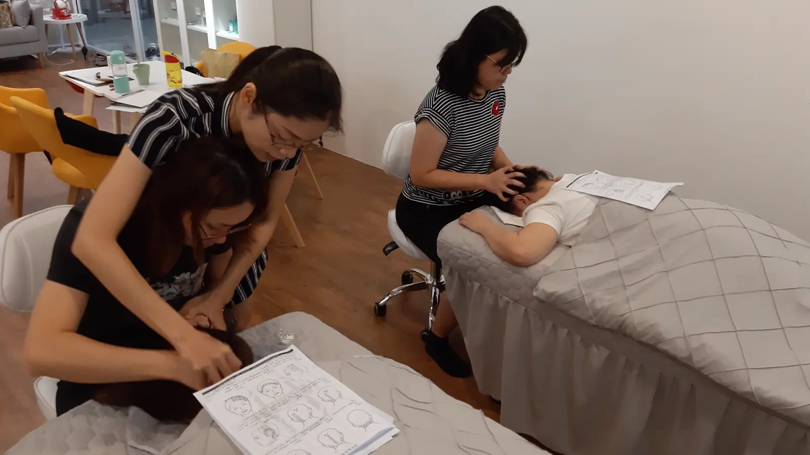

The Bojin Journal · The method
Mirror or By Feel? Two Ways to Work, and When to Use Each

Two students, same week, asked me opposite questions. One wanted to know if she should stop staring at the mirror the whole time, worried she was somehow doing it wrong by watching so closely. The other confessed she always worked with her eyes shut and wondered if she should force herself to look. Neither of them was wrong. They'd each just found half of the answer.
So here's the idea before the detail: a mirror and closed eyes teach two different things, and a full practice uses both. The mirror confirms you're in the right place, at the right angle. Working by feel trains you to read pressure and sensation without a visual crutch. Lean only on one, and you're missing half the skill.
What the mirror is actually good for
Confirmation, not correction on the fly. A mirror lets you check that you've found the spot you meant to find, that the tool is sitting at the angle you intended, and that your free hand is positioned where it should be. This matters most when a position is new to you, or when you're working an area you can't easily feel your way to, like matching the exact point on both sides of your jaw. For a beginner especially, the mirror is doing real, necessary work.
What working by feel teaches that a mirror can't
Watching yourself constantly pulls your attention toward how a stroke looks rather than how it feels, and those are not the same information. A spot that looks like nothing is happening can still be genuinely softening under your hand, and a stroke that looks smooth in the mirror can still be sitting at the wrong pressure. Closing your eyes, even for part of a session, forces your attention onto touch, which is exactly the sense the sensations I've written about elsewhere depend on. It's a skill, and like any skill, it needs practice without the crutch that makes it unnecessary.
A mirror answers "am I in the right place." Feel answers "is this actually working." You need both answers over the course of a practice, just not necessarily at the same moment. Relying only on the mirror means you may never learn to trust what your hand is telling you. Relying only on feel, especially early on, means you may be confidently working the wrong spot.
Why beginners lean on the mirror, and that's correct
If you're new, the honest advice is to use the mirror generously. You genuinely don't yet have the muscle memory for where a spot sits or what the right angle looks like from the inside, and skipping the mirror out of a sense that you "should" be working by feel just means practicing the wrong position with confidence. The shift toward closed-eyes work happens naturally as positions become familiar, not on a fixed timeline.
Try both in one session
Use a little oil or your usual moisturizer, and let the mirror and your eyes closed trade off as you move across your face.
- Open with the mirror Use the mirror to find your starting position and confirm the angle of the tool against your skin for the area you're about to work.
- Close your eyes for the working passes Once you're confident you're in the right spot, close your eyes and continue the working passes, paying attention only to what you feel.
- Reopen to move to a new area Open your eyes again when you move to a different part of your face, confirm your new position in the mirror, then close them again to work.
This rhythm, check then feel, check then feel, gives you the accuracy of the mirror and the sensitivity of working blind, in the same few minutes.
An honest note
Neither approach changes what the method itself can do; a session worked entirely with your eyes open and one worked with them mostly closed produce the same kind of gentle, temporary result, assuming the angle and pressure are right either way. What shifts is how quickly you build the kind of confidence in your own hands that doesn't need a mirror to confirm it's working.
Next session, try closing your eyes for just one area you already know well. You may be surprised how much your hands already remember without your eyes confirming it.
Quick answers
Is it better to use a mirror or work with my eyes closed?
Neither is better on its own; they teach different things. A mirror confirms your position and angle are landing where you intend. Working by feel, eyes closed, sharpens how well you read pressure and sensation. Most sessions benefit from starting with a mirror and finishing without one.
Why would I ever work without looking?
Watching yourself constantly can pull your attention toward how a stroke looks instead of how it feels, which is the opposite of what a spot's sensation is trying to tell you. Closing your eyes for at least part of a session trains you to trust touch over sight, a skill a mirror can't teach.
Should beginners use a mirror the whole time?
Mostly yes, at first. New students genuinely need the mirror to confirm they're finding the right spots and angles. As the positions become familiar, shifting some of each session to eyes-closed work builds the sensation-reading skill a mirror can't provide.
Can I switch between the two mid-session?
Yes, and that's often the most useful approach. Check your position and angle in the mirror when you move to a new area, then close your eyes for the actual working passes on a spot. You get the confirmation and the sensation practice in the same session.
See how the check-then-feel rhythm works
Switching between mirror and feel is easier to show than describe. My free 3-minute video walks through both, so you can see exactly when to look and when to close your eyes.
Watch the free 3-min videoYu-Ting Lan is a Taiwan-based international bojin instructor and the founder of Héhé Studio. She has taught her bojin method to more than a thousand students, from complete beginners to grandmothers, across Taiwan, Hong Kong, and Malaysia.